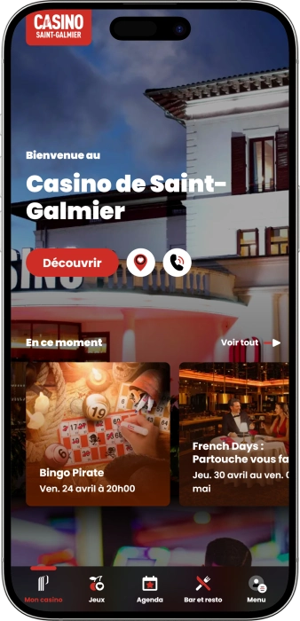

Offre de bienvenue exclusive de
Offre de bienvenue exclusive de
Casino de Saint Galmier — jeux, restaurant, spectacles et détente
Top casinos
Détails du bonus
Casino
Bonus
Note
Tours gratuits
Plus d'infos
Obtenir
Avantages
- Au Casino Le Lion Blanc Partouche, nous réunissons le jeu, la gastronomie et le divertissement dans un même lieu.
-
125 machines pour des gains intenses
-
30 roulettes électroniques très dynamiques
-
7 blackjack électroniques pour jouer vite
-
5 € d’avantage de bienvenue
-
15 % au bar restaurant
-
Entrée gratuite et tenue adaptée
-
Villa élégante, spectacles, terrasse, piscine
- Notre casino séduit par son ambiance soignée, son espace de jeu complet et ses avantages concrets dès l’arrivée. Nous créons une expérience fluide, chaleureuse et mémorable à chaque visite.
casino de saint galmier App



À propos Casino Le Lion Blanc Partouche
Au Casino Le Lion Blanc Partouche, nous mettons en avant des avantages simples, visibles et immédiatement utiles pour nos joueurs. Notre casino se distingue par une expérience complète où le plaisir du jeu s’accompagne d’offres concrètes et d’une ambiance premium.
- 5 € dès l’arrivée.
- 15 % au restaurant.
- 10 % sur les gains parrainés.
Casino Le Lion Blanc Partouche est le lieu où nous transformons une sortie ordinaire en moment marquant. Chez nous, l’ambiance du divertissement se mêle naturellement au confort et à l’élégance. Nous avons pensé notre casino comme un espace où l’on aime jouer, se retrouver et se détendre. Notre univers convient aussi bien à une visite improvisée qu’à une soirée préparée à l’avance.
L’atmosphère y est vivante, accueillante et toujours agréable. Nous complétons l’expérience de jeu avec la restauration, le bar et des animations régulières. Chacun peut y choisir un rythme rapide ou profiter d’une soirée plus posée. Nous accordons une vraie importance aux détails pour que chaque espace soit cohérent et plaisant. Notre vision repose sur l’émotion, le service et les avantages utiles pour nos visiteurs. Casino Le Lion Blanc Partouche est une destination de plaisir à laquelle on a envie de revenir.
Casino Le Lion Blanc Partouche: horaires d'ouverture, moyens de paiement et programme de fidélité
Casino Le Lion Blanc Partouche — ambiance, horaires et espaces de détente
Au Casino Le Lion Blanc Partouche, nous cultivons une atmosphère élégante où le charme d’une villa de caractère rencontre l’énergie d’un casino moderne. Notre établissement se vit comme un lieu complet de divertissement, dans lequel le jeu, la restauration, le bar et les animations s’enchaînent naturellement. Nous ouvrons tous les jours afin de vous offrir une vraie liberté de visite, qu’il s’agisse d’une session rapide ou d’une soirée entière. Notre salle de jeux reste le cœur de l’expérience, avec un équilibre réussi entre machines à sous, jeux électroniques et tables traditionnelles. Le Bar des Jeux accompagne parfaitement le rythme du casino, tandis que L’Orangerie propose une parenthèse gourmande plus posée et raffinée. Dès les beaux jours, notre terrasse et notre espace piscine renforcent encore la sensation de détente. Nous donnons aussi une place importante aux spectacles, aux soirées à thème, aux dîners spectacles et aux événements privés ou professionnels. Le salon Atlanta permet d’accueillir des réceptions, des repas festifs et des rendez-vous d’entreprise dans un cadre convivial. Notre programme Players Plus prolonge l’expérience avec une inscription gratuite, des avantages de bienvenue, une logique de cumul et des offres personnalisées. Pour celles et ceux qui aiment allier jeu et gastronomie, notre parcours de visite est particulièrement fluide entre la salle, le bar et le restaurant. Enfin, nous enrichissons l’expérience avec des coffrets cadeaux et des idées de séjours issus de l’univers Partouche.
| Zone | Jours | Horaires |
|---|---|---|
| Salle de jeux | Tous les jours | 09:00–03:00 |
| Zone jeux électroniques | Tous les jours | 09:00–03:00 |
| Tables traditionnelles | Tous les jours | Selon le programme des tables |
| Bar des Jeux | Lun, Mar, Mer, Jeu, Dim | 12:00–01:30 |
| Bar des Jeux | Ven, Sam | 12:00–02:30 |
| Restaurant L’Orangerie | Mer, Jeu, Dim | 12:00–14:00 et 19:00–21:30 |
| Restaurant L’Orangerie | Ven, Sam | 12:00–14:00 et 19:00–22:00 |
| Espace détente piscine | En saison | Selon calendrier saisonnier |
Casino Le Lion Blanc Partouche — équipe, langues, paiements et retraits
Au Casino Le Lion Blanc Partouche, nous plaçons la qualité de l’accueil au centre de l’expérience. Notre équipe accompagne les visiteurs dans l’orientation au sein du casino, explique le fonctionnement des espaces de jeu et facilite l’inscription au programme de fidélité. Nous voulons que chaque visite soit fluide, rassurante et agréable, y compris pour une première découverte. Dans nos informations pratiques, le français est la langue principale de communication et de service au sein de notre établissement.
Sur le plan des paiements, nous privilégions un fonctionnement simple et lisible. Notre casino travaille en euros, ce qui rend les règlements directs pour les jeux, le bar, le restaurant et les opérations de caisse. Nous acceptons les cartes bancaires, les chèques et les espèces, afin de laisser à chacun le moyen de paiement le plus confortable. Cette souplesse contribue à une expérience de visite homogène du début à la fin.
Pour les besoins en liquidités et en organisation du budget de jeu, il est préférable de préparer sa visite en euros afin de profiter pleinement de toutes les zones du casino. Nos informations publiques mettent surtout en avant les moyens de paiement principaux, ce qui permet de garder un cadre clair et pratique. En matière de retrait de gains, nous appliquons une procédure de caisse conforme aux règles de chaque jeu, avec contrôle d’identité lorsque cela est nécessaire. Nous veillons ainsi à offrir un traitement fiable, sécurisé et serein des paiements de gains.
Concernant la fiscalité, nous distinguons toujours le versement du gain dans notre casino et la situation personnelle du joueur. Dans le cadre d’une visite de loisir, aucun impôt séparé n’est généralement présenté à la caisse comme une retenue spécifique visible pour le client, tandis que les éventuelles obligations déclaratives dépendent de votre statut personnel et de votre résidence fiscale. Pour des montants importants ou des gains récurrents, la bonne approche consiste à apprécier votre situation individuelle. De notre côté, nous mettons surtout l’accent sur un parcours clair, une identification maîtrisée et une expérience de paiement rassurante.
Casino Le Lion Blanc Partouche — règles de visite, tenue et accès
Au Casino Le Lion Blanc Partouche, nous voulons que l’entrée soit simple, claire et agréable dès l’arrivée. L’accès à notre établissement est libre, ce qui permet de venir aussi bien pour une sortie spontanée que pour une soirée préparée à l’avance. Nous tenons cependant à préserver une ambiance élégante, raison pour laquelle une tenue adaptée est demandée. Nous valorisons une présentation soignée, en harmonie avec l’esprit de notre casino. Pour accéder aux espaces de jeux et à certaines zones de spectacles, une pièce d’identité est exigée. Cette règle participe à un accueil sécurisé et parfaitement maîtrisé. Notre casino est réservé aux adultes et l’accès aux salles de jeux est interdit aux moins de 18 ans. Nous appliquons également les règles de contrôle d’accès liées au cadre des jeux. Pour le confort des visiteurs, un parking est disponible à proximité. L’arrivée peut ainsi s’organiser facilement en voiture ou via les principaux points de transport des environs. Nous accordons aussi une attention particulière à l’accessibilité de notre établissement.
Conditions d’entrée
- • Pièce d’identité valide demandée pour accéder aux espaces de jeux.
- • Accès réservé aux personnes majeures et autorisées à jouer.
- • Tenue correcte et adaptée à l’ambiance de notre casino.
Éléments non autorisés
- • Entrée des mineurs dans les salles de jeux.
- • Accès sans justificatif d’identité lorsqu’un contrôle est requis.
- • Tenue inadaptée au cadre de notre établissement.
- • Comportement contraire aux règles de sécurité et de bon déroulement de la visite.
Parking et accès
- • Nous disposons d’un parking pratique à proximité pour faciliter l’arrivée en voiture.
- • Une arrivée via la gare la plus proche puis un court trajet complémentaire permet aussi une visite confortable.
- • Pour une soirée avec restaurant, spectacle ou session de jeu prolongée, il est conseillé d’anticiper son heure d’arrivée.
Casino Le Lion Blanc Partouche — programme de fidélité Players Plus
Au Casino Le Lion Blanc Partouche, nous avons conçu notre fidélité pour qu’elle soit claire, utile et agréable dès la première visite. Notre dispositif repose sur Players Plus, un programme gratuit et simple à rejoindre qui ouvre l’accès à l’univers d’avantages Partouche. Nous facilitons l’inscription afin que chacun puisse activer sa carte rapidement et l’utiliser en version physique ou numérique. Dès l’adhésion, nous privilégions des bénéfices concrets plutôt que des promesses théoriques. Notre offre de bienvenue comprend 5 € de jeu et 15 % de réduction au bar ou au restaurant, ce qui rend le démarrage immédiatement intéressant. Ensuite, l’expérience s’enrichit grâce au cumul d’euros Players au fil des sessions de jeu et des moments passés chez nous. Nous ajoutons aussi des offres personnalisées, des opérations temporaires, des invitations ciblées et une surprise pour l’anniversaire. Pour les visiteurs qui souhaitent parrainer un proche, nous proposons 5 € Players ainsi que 10 % des gains MAS/RAE du filleul. Le programme s’étend également aux offres Évasions, avec des remises pouvant aller jusqu’à 50 % sur des séjours du réseau. Nous cherchons à rendre la fidélité souple et évolutive, afin que l’activité régulière ouvre un niveau de personnalisation toujours plus riche. Sur nos pages publiques, nous ne mettons pas en avant une grille locale rigide de statuts nommés pour notre casino, car nous préférons une logique de bénéfices progressifs et ciblés. Cette approche nous permet de conserver une relation plus personnelle avec chaque membre.
Conditions d’inscription
- • Inscription Players Plus gratuite et sans engagement.
- • Présentation d’une pièce d’identité pour créer la carte.
- • Utilisation possible de la carte en format physique ou numérique.
- • Activation réalisable dès la visite pour profiter rapidement des avantages.
Étapes d’adhésion et logique d’évolution
- • Étape d’entrée : activation de la carte et accès immédiat à l’offre de bienvenue.
- • Étape de cumul : accumulation d’euros Players pendant les sessions de jeu et les visites.
- • Étape de personnalisation : offres ciblées, invitations, surprises et avantages adaptés au profil du membre.
- • Nous privilégions une fidélité évolutive et personnalisée plutôt qu’une communication publique centrée sur des noms de niveaux fixes.
Bonus et avantages disponibles
- • 5 € de jeu offerts : avantage de bienvenue pour bien démarrer l’expérience.
- • 15 % de réduction au bar ou au restaurant : bénéfice immédiat sur la partie restauration.
- • 5 € Players en parrainage : récompense simple pour inviter un proche.
- • 10 % des gains MAS/RAE du filleul : bonus complémentaire pour les membres actifs.
- • Cumul d’euros Players : monnaie fidélité utilisable selon les offres et dispositifs disponibles.
- • Offres personnalisées et animations exclusives : avantages adaptés au rythme de visite.
- • Surprise d’anniversaire : attention dédiée au membre le jour de son événement.
- • Jusqu’à -50 % sur les offres Évasions Players Plus : réduction attractive sur des séjours du réseau.
Fournisseurs de logiciels
Divertissement et jeux au Casino Le Lion Blanc Partouche
Casino Le Lion Blanc Partouche — bonus, gains et offres spéciales hors fidélité
Au Casino Le Lion Blanc Partouche, nous donnons de la valeur non seulement au jeu, mais à toute l’expérience qui l’entoure. En dehors de Players Plus, nous animons la visite avec des jackpots vivants, des temps forts saisonniers et des formats événementiels qui renouvellent l’intérêt à chaque passage. Nous entretenons une vraie dynamique de salle grâce à l’univers des gains récents et au rythme de redistribution affiché dans notre environnement de jeu. Nous ne figeons pas une somme unique de gain, car l’attrait du jackpot repose justement sur son évolution en temps réel. Nous voulons aussi que l’envie de venir chez nous dépasse la seule partie jeu, c’est pourquoi nous associons restaurant, soirées à thème et propositions scéniques. La restauration devient elle-même une offre forte, grâce à une cuisine de saison qui donne une autre dimension à la sortie. Aux beaux jours, la terrasse et l’espace piscine renforcent cette sensation de parenthèse complète. Nous proposons également des coffrets cadeaux et des chèques cadeaux pour transformer une visite en idée cadeau facile à offrir. Pour les événements privés ou professionnels, nous mettons à disposition des espaces qui prolongent naturellement l’univers du casino. Nos soirées régulières, nos spectacles et nos formats dîner-animation augmentent encore la richesse de l’expérience. Nous cherchons à ce que chaque visite laisse une impression de soirée pleinement réussie. Chez nous, le gain peut être financier, mais aussi émotionnel, gastronomique et événementiel.
Gains et dynamique de jeu
- • Jackpots en direct : montants évolutifs en temps réel pour une sensation de gain renouvelée à chaque visite.
- • Format « Derniers Jackpots » : mise en valeur des gains récents et de l’énergie du moment.
- • Montant redistribué du mois : indicateur de l’activité globale et de la vitalité de notre salle.
Offres spéciales et idées cadeaux
- • Coffrets cadeaux et chèques cadeaux : solution idéale pour offrir une expérience complète autour du casino.
- • Salon Atlanta à partir de 800 € : base attractive pour un événement privé ou professionnel sur mesure.
- • Format soirée complète : combinaison possible entre jeux, dîner et animation dans une seule expérience.
Gastronomie et saisonnalité
- • Menu à partir de 24,90 € à L’Orangerie : porte d’entrée gourmande et claire vers notre univers restauration.
- • Terrasse en surplomb de la piscine : atout saisonnier très apprécié pour prolonger la soirée.
- • Espace piscine en été : dimension détente supplémentaire pour enrichir la visite.
Animations et événements
- • Soirées à thème : manière régulière de renouveler l’ambiance et l’attrait du calendrier.
- • Dîners spectacles et représentations : alliance entre plaisir de la table et émotion scénique.
- • Événements privés et d’entreprise : solution complète pour célébrer ou réunir dans l’univers du casino.
Casino Le Lion Blanc Partouche — jeux les plus populaires
Au Casino Le Lion Blanc Partouche, nous avons construit une offre de jeux capable de séduire aussi bien les débutants que les joueurs habitués. Notre force tient à l’équilibre entre un parc important de machines à sous, des postes électroniques et des tables traditionnelles. Avec 125 machines, la visite garde toujours une vraie sensation de variété. Les jeux électroniques plaisent particulièrement à celles et ceux qui recherchent un rythme rapide et une prise en main immédiate. La roulette électronique attire par sa fluidité et sa lisibilité. Le blackjack électronique séduit par son mélange de tempo et de réflexion. Pour les amateurs d’un casino plus classique, nous proposons aussi des tables traditionnelles qui donnent davantage de relief à la soirée. La roulette anglaise reste l’un des symboles les plus élégants de notre salle. Le blackjack traditionnel plaît pour son intensité, son interaction et son esprit stratégique. Nous veillons aussi à rendre le passage d’un jeu à l’autre très naturel. Cette complémentarité fait partie de l’identité forte de notre casino. Chez nous, le jeu se vit comme un parcours complet d’émotions et de styles.
Jeux les plus demandés
- • Machines à sous : 125 machines pour varier les rythmes de jeu et multiplier les sensations.
- • Roulettes électroniques : format rapide et très apprécié pour son dynamisme.
- • Blackjack électroniques : jeu idéal pour allier cadence et prise de décision.
- • Roulettes anglaises : grande référence des tables classiques dans notre ambiance casino.
- • Blackjack : table incontournable pour les visiteurs qui aiment le jeu vivant et stratégique.
Pourquoi ces jeux plaisent autant
- • Les machines offrent un large éventail d’ambiances et de mécaniques.
- • Les formats électroniques facilitent une entrée en jeu rapide et confortable.
- • Les tables traditionnelles renforcent le prestige et l’émotion de la soirée.
- • La combinaison des formats permet à chacun de créer son propre parcours de jeu.
Casino Le Lion Blanc Partouche — limites de mise par zone de jeu
Au Casino Le Lion Blanc Partouche, nous affichons les limites de mise directement sur les tables et les terminaux afin que chaque joueur dispose d’une information actualisée au moment précis où il s’installe. Cette méthode est particulièrement utile, car les paramètres peuvent évoluer selon le type de jeu, la configuration de la salle et le moment de la journée. Le tableau ci-dessous vous aide à repérer où consulter les mises minimales et maximales dans notre casino. Pour entrer dans une partie avec une parfaite visibilité, nous vous invitons toujours à vous référer à l’affichage présent sur la position de jeu choisie.
| Jeu / Zone | Mise minimale | Mise maximale |
|---|---|---|
| Machines à sous | Affichée sur chaque machine | Affichée sur chaque machine |
| Roulettes électroniques | Affichée sur le terminal | Affichée sur le terminal |
| Blackjack électroniques | Affichée sur le terminal | Affichée sur le terminal |
| Roulette anglaise | Indiquée à la table | Indiquée à la table |
| Blackjack | Indiquée à la table | Indiquée à la table |
Casino Le Lion Blanc Partouche — événements, spectacles et divertissements de soirée
Au Casino Le Lion Blanc Partouche, nous considérons le divertissement comme une composante essentielle de l’expérience globale. Une soirée chez nous ne se résume pas aux jeux : elle se prolonge à travers une programmation régulière qui apporte rythme, émotion et renouvellement. Nous organisons des soirées à thème, des animations en salle, des dîners spectacles et des formats théâtraux pour que chaque visite ait une couleur différente. Cette vision plaît particulièrement aux visiteurs qui recherchent une sortie complète et vivante.
Nos divertissements réguliers sont pensés pour maintenir une vraie dynamique du début à la fin de la soirée. La salle de jeux garde une énergie particulière grâce aux animations et aux temps forts qui viennent enrichir l’ambiance. Le bar joue ici un rôle central, car il permet de prolonger naturellement les échanges entre deux sessions de jeu. Nous cherchons à faire du casino un parcours cohérent, où jeu, convivialité, musique d’ambiance et gastronomie avancent ensemble.
Si l’on parle de vie nocturne, notre force réside dans l’animation tardive au sein même du casino. Plutôt que de séparer l’expérience dans un espace isolé, nous développons une ambiance de soirée complète via la salle de jeux, le bar, les spectacles et les dates thématiques. Cette approche donne une sensation plus fluide et plus immersive. Tout ce qui compose une sortie réussie se trouve déjà réuni dans notre établissement.
Nous développons également une activité événementielle forte pour les réceptions privées et les rendez-vous professionnels. Notre casino peut accueillir un anniversaire, un repas festif, une réception, un séminaire ou une soirée d’entreprise dans une ambiance qui sort de l’ordinaire. Cette polyvalence renforce la richesse de notre calendrier et la diversité de nos usages. C’est précisément l’alliance entre jeux, scène, bar, restaurant et événementiel qui donne à notre programme de divertissements sa personnalité.
Tous les divertissements du Casino Le Lion Blanc Partouche
- • Soirées à thème : rendez-vous réguliers pour créer une ambiance unique à chaque date.
- • Animations en salle de jeux : manière d’intensifier l’énergie et l’engagement pendant la soirée.
- • Dîners spectacles : expérience qui unit la table et la scène dans un seul moment.
- • Représentations théâtrales : dimension culturelle et événementielle de notre programmation.
- • Ambiance bar en soirée : prolongement naturel du jeu et des échanges jusqu’à tard.
- • Événements privés : mariages, anniversaires, repas de famille et réceptions.
- • Événements professionnels : séminaires, dîners, rencontres d’entreprise et soirées dédiées.
- • Terrasse et détente autour de la piscine en saison : atout estival pour une sortie plus relaxante.
Casino Le Lion Blanc Partouche — bar, restaurant, détente et expérience séjour
Au Casino Le Lion Blanc Partouche, nous pensons la détente comme une expérience complète et non comme un simple complément au jeu. Notre univers repose sur une belle articulation entre le bar, le restaurant, la salle de jeux et les espaces saisonniers de relaxation. L’Orangerie incarne notre adresse gourmande, celle qui donne à la soirée un rythme plus posé, élégant et savoureux. Nous y valorisons une cuisine de saison et un cadre qui transforme le repas en moment fort de la visite.
Le Bar des Jeux prolonge naturellement l’énergie du casino. C’est l’endroit idéal pour faire une pause, partager un verre, profiter d’une offre snacking ou retrouver ses proches entre deux temps de jeu. Nous tenons à ce que notre établissement laisse aussi de la place à la respiration, au confort et à la convivialité. C’est pourquoi le bar occupe chez nous une vraie fonction de destination, et pas seulement d’accompagnement.
La terrasse et l’espace piscine renforcent fortement le charme de notre offre aux beaux jours. Ils permettent de vivre le casino de manière plus ample, entre divertissement, gastronomie et détente en extérieur. Cet équilibre plaît beaucoup à celles et ceux qui aiment alterner intensité et relâchement au fil d’une même soirée. Notre établissement devient alors un lieu adapté aussi bien à une sortie à deux qu’à une rencontre entre amis ou à une occasion spéciale.
Sur la partie séjour, nous enrichissons l’expérience avec des coffrets cadeaux, des chèques cadeaux et des propositions d’évasion issues de l’univers Partouche. Cela permet de faire du Casino Le Lion Blanc Partouche non seulement une destination de soirée, mais aussi un point de départ vers un format plus large de loisir. Nous convenons particulièrement aux visiteurs qui aiment réunir table, ambiance, divertissement et idée d’escapade. L’ensemble crée une impression de détente cohérente et soignée.
Tous les espaces de détente du Casino Le Lion Blanc Partouche
- • Restaurant L’Orangerie : notre adresse principale pour une expérience gourmande et élégante.
- • Bar des Jeux : espace convivial pour cocktails, boissons, snacking et pauses entre deux sessions.
- • Terrasse : prolongement extérieur très agréable pendant la belle saison.
- • Espace piscine : format détente estival qui enrichit fortement la visite.
- • Coffrets cadeaux et chèques cadeaux : solution idéale pour offrir une expérience complète.
- • Offres séjour du réseau Partouche : manière d’élargir la sortie vers une escapade plus immersive.
FAQ
Oui, notre établissement se prête très bien à une première visite grâce à son atmosphère accueillante et à la diversité de ses espaces. Le mélange entre jeu, restauration et détente rend l’expérience plus accessible.
Oui, nous proposons des formats cadeaux qui permettent de transformer une visite en belle idée à offrir. C’est un excellent choix pour un anniversaire ou une occasion spéciale.
Oui, la terrasse et l’espace piscine donnent une vraie valeur supplémentaire pendant la belle saison. La visite prend alors une dimension encore plus détendue.
Oui, notre établissement fonctionne aussi très bien pour un passage d’une à deux heures. On peut venir pour jouer un moment, boire un verre ou dîner sans organiser une longue soirée.
Nous mettons autant l’accent sur l’ambiance et l’expérience globale que sur le jeu lui-même. Cette alliance entre casino, gastronomie, événements et détente saisonnière nous donne une identité très complète.